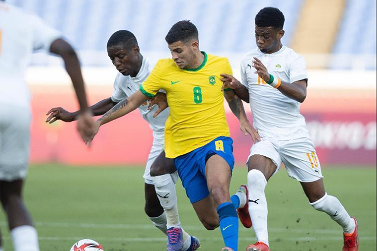
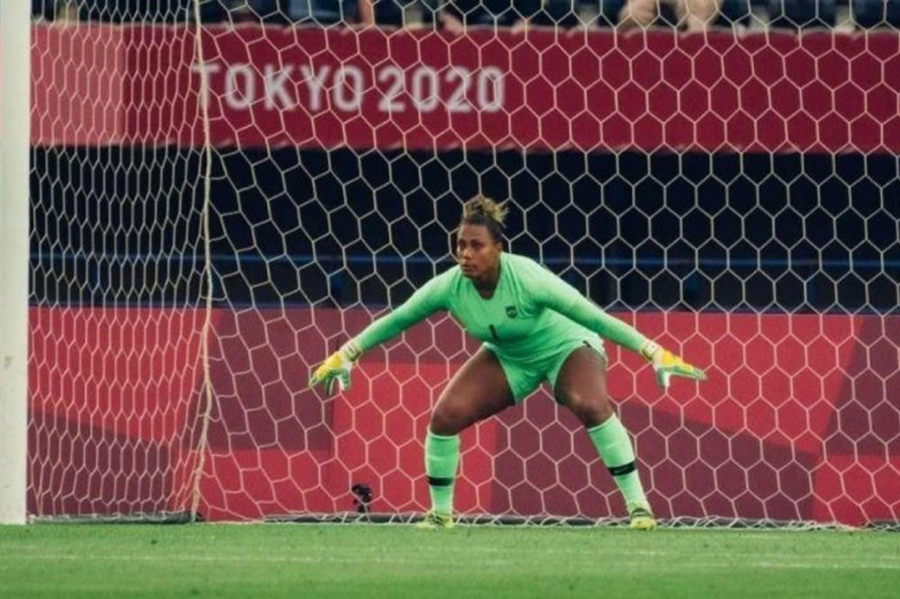
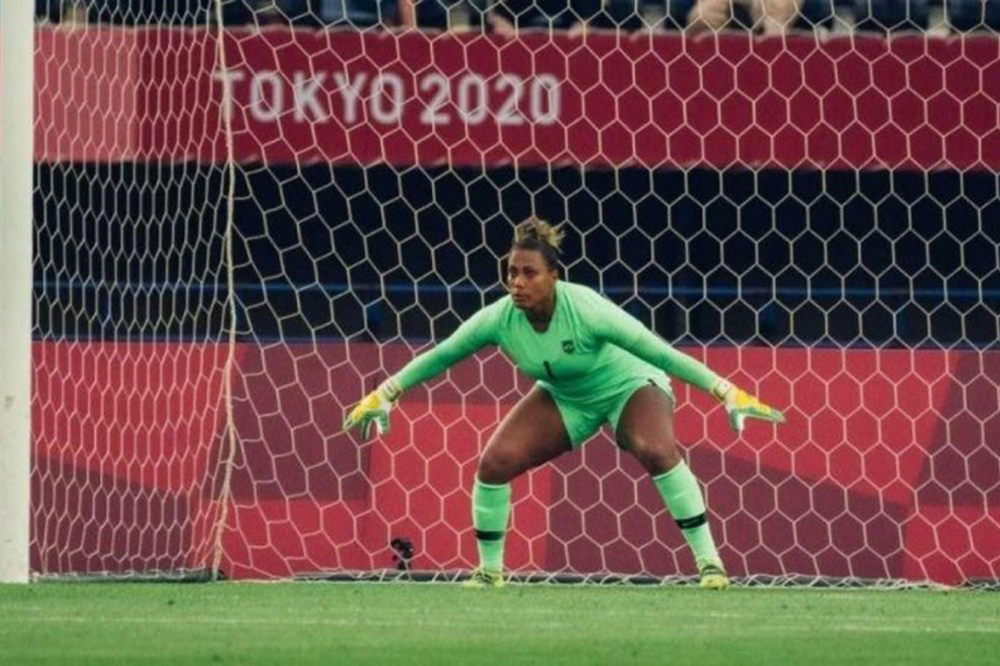

Brasil joga 70 minutos com um a menos e só empata com a Costa do Marfim Leia Mais...  Jornalista holandês faz ofensas pesadas à pernambucana Bárbara da seleção brasileira feminina Leia Mais...  Olimpíada de Tóquio: Argentina perde e Egito segura a Espanha no grupo C Leia Mais... Próximo jogo do Brasil nas Olimpíadas: confira horários e datas das partidas da seleção nos jogos de Tóquio Leia Mais... Kubo faz gol de novo, Japão vence outra e fica bem perto de vaga no Grupo A das Olimpíadas Leia Mais... Confira abaixo alguns dos melhores momentos do futebol olímpico:
Jornalista holandês faz ofensas pesadas à pernambucana Bárbara da seleção brasileira feminina Leia Mais... 
Próximo jogo do Brasil nas Olimpíadas: confira horários e datas das partidas da seleção nos jogos de Tóquio Leia Mais...
Kubo faz gol de novo, Japão vence outra e fica bem perto de vaga no Grupo A das Olimpíadas Leia Mais...